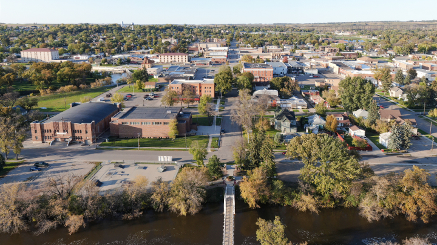

About Donville

Donville is a quiet town in the valley near one of the many riversides in the Pacific Northwest.
Inspired by the setting in Isabel Allende's "The House of the Spirits", Donville is a place where magic and reality intertwine.